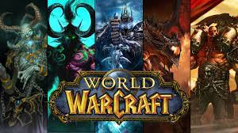

Role Playing Games
Welcome to the BEST guide on video games you will ever find.
Welcome to the BEST guide on video games you will ever find.
| Type of RPG | Description | Example |
|---|---|---|
| Action role-playing games (ARPGs) | An action role-playing game is a mix of both action games and role-playing genres. Instead of turn-based or menu-based fighting, real-time combat is prioritized in the games, where the player controls the characters directly. These games frequently employ hack-and-slash or shooter-style action game combat systems. Action adventure games with a mission structure and role-playing game principles can also be included in the action role-playing games. |  |
| Massively multiplayer online role-playing games (MMORPGs) | A permanent state world (PSW) is the setting for a massively multiplayer online role-playing game (MMORPG), in which tens of thousands or even millions of users create and configure their characters that go hand in hand with the role-playing genre. |  |
| Tactical role-playing games(TRPGs) | Tactical RPGs are also known as Strategy RPGs. They are video games that combine aspects of strategy with old-school computer or console role-playing games. The major aspects of playing TRPGs are the opportunities for strategic planning, analytical thinking, and challenging challenges. |